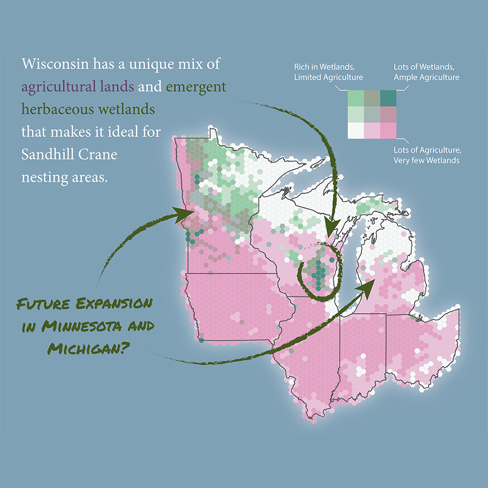
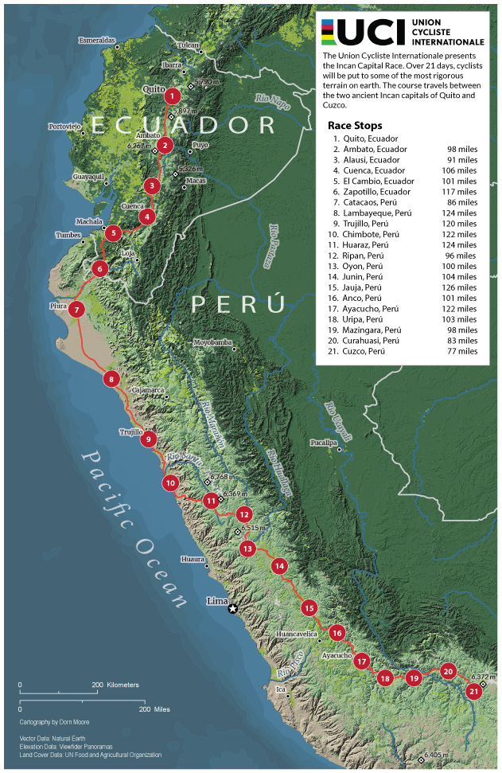
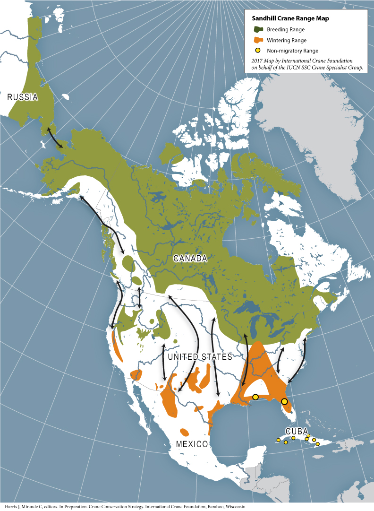
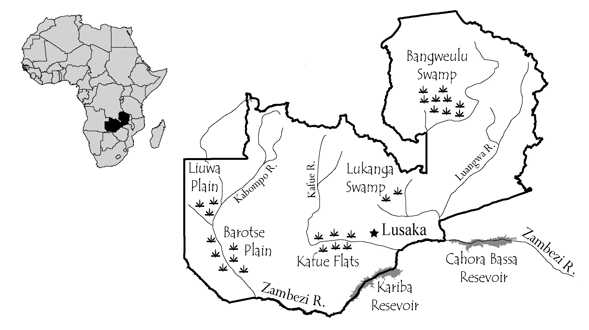

ABOUT ME
Conservation GIS and Cartography

Dorn Moore
I've been a geographer with a focus on using geospatial tools for environmental conservation around the world for 20 years. The majority of that time, I've worked with the International Crane Foundation to ensure a future for the world's 15 species of cranes.
In the fall of 2016, I decided that I needed to catch up with the changes that happened in GIS techniques since I finished my MA in 1998. I've been working on getting a second Masters degree, again in Geography, through the University of Wisconsin's Online Professional MS in GIS and Web Map Programming. I am constantly amazed at the changes over the past 20 years.
PORTFOLIO
MY WORK
Here are some of my latest projects.
Click on the images to make them bigger



